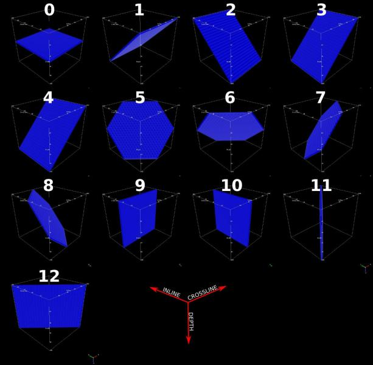
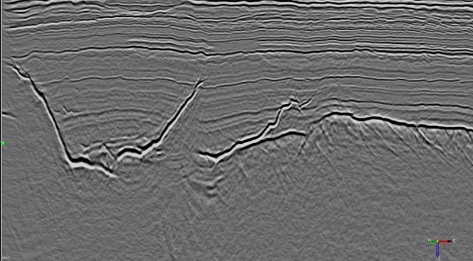
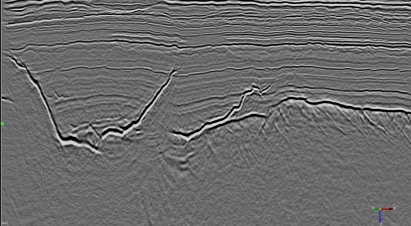
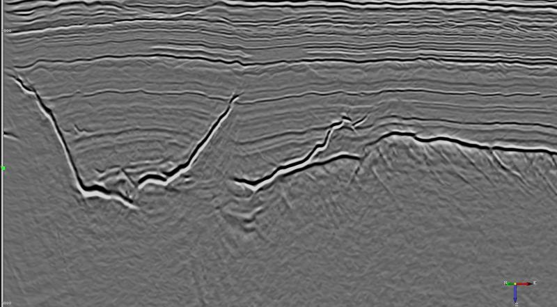
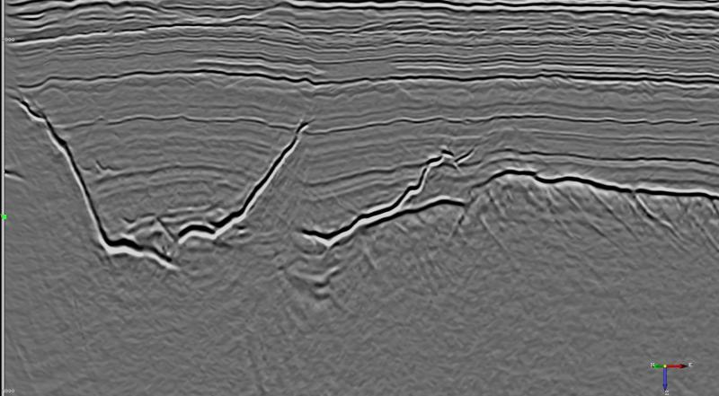
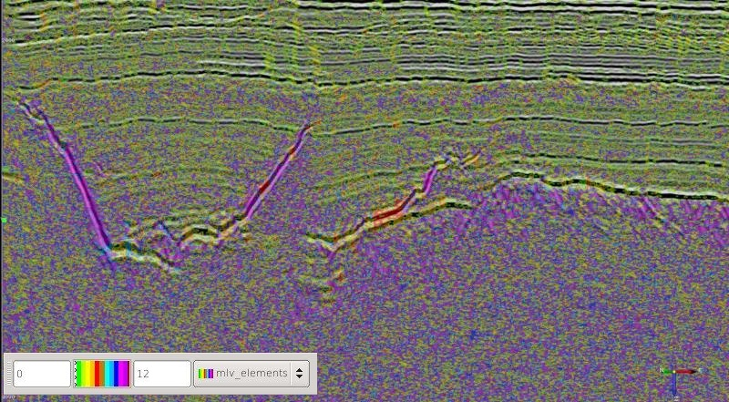

This attribute plugin for the open source seismic interpretation platform OpendTect applies a structure preserving Mean of Least Variance filter.
Description
This attribute is an implementation of a mean of least variance filter Schulze & Pearce (1993) where the analysis elements are all the possible planes through the sample points in the analysis block. This algorithm may be similar to that proposed by Al-Dossary & Wang (2011).
The sample variance for all samples on each analysis element is calculated and the output statistic (average, mean or element index) is output for the element with the least variance.
The following figure shows the relationship between the geometry of the analysis elements and the element index.

Examples
 

 


Input Parameters
This attribute has 2 parameters:
| NAME | DESCRIPTION |
|---|---|
| Filter size | Specifies a cube of samples centred at the analysis location. Increasing the size will increase the degree of smoothing at the risk of smearing structural features. As the examples show it may be better to apply multiple passes of a small size filter than a single pass of a larger filter to reduce the risk of artifacts in the output. OpendTect makes it really easy to cascade multiple filter passes. |
| Output statistic | What the filter will output. The options are average, median or the element index. The element index is included for curiosity and quality control. Generally the default Average provides the most pleasing output. |